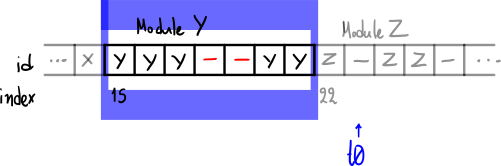
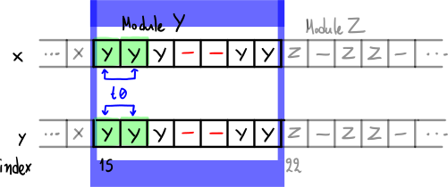
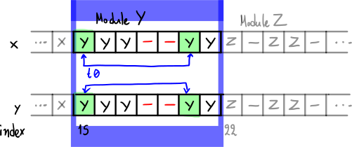
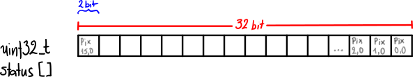
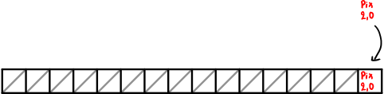
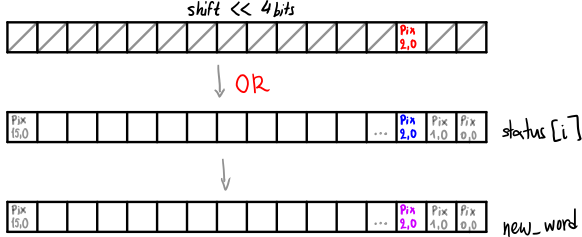
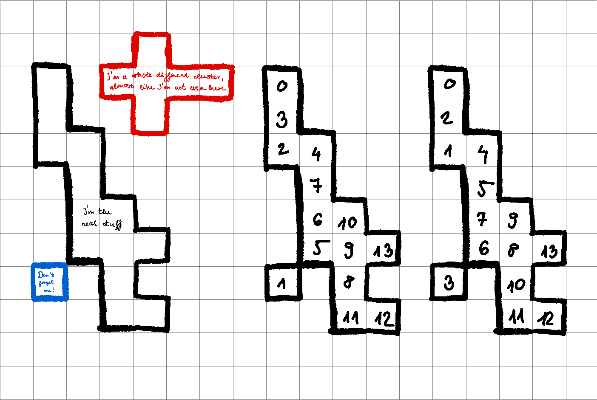
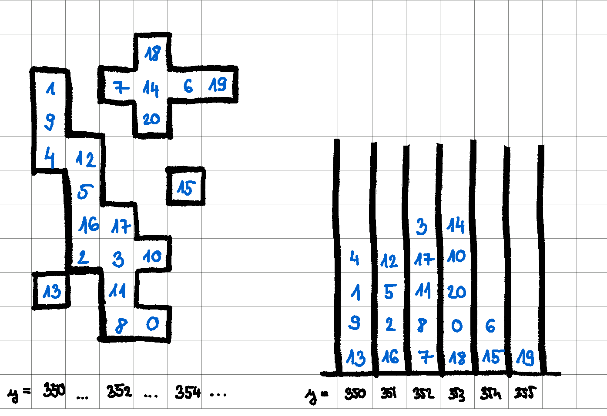

findClus
CUDA kernel for finding Clusters given digis extracted from raw data.
Taking advantage of the SoA data approach, it is meant to be executed with a 1D grid of blocks, each block being a 1D grid of threads. The number of blocks and threads used to launch this kernel is equal to the number of modules present in the detector which, in turn, depends on the Phase:
| Blocks | Threads | |
|---|---|---|
| Phase 1 | 1856 | 256 |
| Phase 2 | 3892 | 384 |
Note
The number of blocks is equal to the number of modules, which depend on the Phase. This number is found in the Geometry/CommonTopologies CMSSW module which contains constants related to the Pixel Detector Topology.
Overview
This kernel is launched with 1 block per module, meaning that each GPU block will be assigned the digis of 1 module. Then, each block's thread is assigned 1 or more digis to operate on.
Note 1
The case to launch this kernel with less blocks
than there are modules is also accounted for, by running
a first for loop in each thread which runs from firstModule (i.e.
the thread's Block index) to endModule by increments
of gridDim.x (i.e. total number of blocks).
Note 2
Since the number of threads per block will probably be smaller than the number of digis per module, a single thread will have to take care of doing the calculations for more than one digi.
This is accounted for by a second for loop which starts
at first (calculated by using the index stored in moduleStart
and adding the threadIdx.x) and iterates up to numElements (i.e. total number
of digis), with increments of blockDim.x (i.e. number of threads
per block)
Arguments
wordCounter [Input]
The total number of pixels for all data.
Calculating the total number of pixels in a module
This is done by the code below:
133 134 135 136 137 138 139 140 | |
Shared memory is used to store the msize variable. This is shared
among the threads in the GPU block to calculate the total number of pixels
that the current module has.
In a nutshell, all threads in a GPU block are assigned elements in the
id array, and, after skipping invalid ids, they try to find the
index in the id array where the id is different to the one
that the current block is assigned.
Let's assume that the id array is as follows:

Then, a single block is assigned to Module Y data:
Let's assume that we are launching the kernel with 2 threads
per block. Those start iterating over the id array, starting
from the index that the moduleStart array indicates for the
module that has been assigned to the current block (in this example,
this index is 15):

They keep iterating, with step blockDim.x1.
If invalidModule is found in the id array, they
skip it (see t1 below):
Next iteration:
Next iteration. Notice that t1 is now assigned
an index which belongs to the next module, Module Z.
This satisfies the if (id[i] != thisModuleId) condition,
so the atomicMin(&msize, i) instruction is executed, meaning
that the thread will store in msize the minimum between
msize (which has been initialized with the value of the total
number of pixels, i.e. the final index of the id array) and
the current index it's assigned (i which is equal to 22).
msize is, therefore,
assigned the value 22 and t1 breaks from the loop.

Now, only t0 is left to continue iterating,
which, in turn, is assigned an index which belongs to
Module Z, index 23. The condition mentioned above
is satisfied again, so t0 executes atomicMin(&msize, i)
with i=23 and msize=22, so msize stays 22.

We now know the last non-invalid index of the current module, and
this index is stored in msize.
Duplicate detection
Alternative 1 (PR #37359, Not merged)
Similarly to the total module pixels calculation, to detect duplicate digis a similar iteration logic can be applied.
Assumming 2 threads per block, t0 starts with the first element
of the module (with index 15) and compares the x and y values
between index 15 and the next one (assumming it's not invalid), i.e.
index 16:

If both x values are the same and y values are the same, the
digi is considered a duplicate.
Then, t0 compares element 15 to 17:

Elements 18 and 19 are invalid, so they're skipped and the 20th is compared:

This goes on until the msizeth element.
Then, t1 will start from the element at position 15 + threadIdx.x = 16 and compare
the x and y values with the ones at position 17 and so on.
t0 will then iterate to the next element with step size blockDim.x (in our case
2), until the 2nd element from the end is reached (in our example, the element
with index 20; there's no comparison to be made once a thread reaches index 21).
Alternative 2 (PR #38946, Merged)
This alternative approach uses shared thread memory to create a status array
where the number of times each pixel has been encountered in a module is stored. To make it
as small as possible, 2 bits are used per pixel, which, for Phase 12, amounts
to 160x416x2 bits = 16640 bytes per module3.
A visual representation of the first array element of status (Pixel
coordinates are in X,Y):

In effect, we can store the status of 16 pixels per status array element.
In the status array, one of the following values are stored:
0x00: Empty0x01: Found0x03: Duplicate
A getIndex function is implemented, which maps a pixel's x and y coordinates
to an index to the status array.
A getShift function, which, once the index in the status array is found,
finds the exact "sub-location" that the pixel should be stored in, in the
given status array element.
For example, pixel with coordinates x=2 and y=0 be stored in:
getIndex(x, y) = (uint32_t))(pixelsPerModuleX * y + x) / valuesPerWord)
= (uint32_t)((160 * 0 + 2) / 16 ) = 0
So the pixel(2,0) is stored in status[0].
To find the shift amount within status[0] where the pixel information
will be stored in:
getShift(x, y) = (x % valuesPerWord) * 2 = (2 % 16) * 2 = 4
4 bits within status[0] to store information
for pixel(2,0).
Note
- In
getShift, the multiplication by2corresponds to the number of bits used to store the per-pixel information. getShiftwill not work if thepixelsPerModuleXvalue is not a multiple ofvaluesPerWord(i.e.16) and would need to takeyinto account too.
To read a specific status for a specific pixel (see getStatus()),
once we have determined
the index and shift, we use the mask calculated (for bits=2, mask
is 0x03) to extract the data.
Doing a bitwise AND (&) of the mask with the status[index] value,
after right-shifting (>>) the latter by the shift value calculated,
we can read the 2 bits that refer to the specific pixel:
To write the status to a specific pixel (see promote()), we typecast
the status to uint32_t:

Then left-shift it (<<) by shift bytes:
The new_word is then calculated:

And, finally, an atomicCAS (Compare And Swap) operation is done between
status[i] and new_word, which stores the new value back in the status array,
if new_word is different than status[i].
Note
atomicOR could be used directly, instead of using OR (|) and then
atomicCAS, but it seems it's a bit slower.
Documentation on atomicCAS can be found
here.
Histogram Filling
Todo
what the heckerino is histogram filling?
The hist histogram is stored in shared memory, so that its
access from all threads is as fast as possible.
Code:
// fill histo
for (int i = first; i < msize; i += blockDim.x) {
if (id[i] == invalidModuleId) // skip invalid pixels
continue;
hist.count(y[i]);
}
__syncthreads();
if (threadIdx.x < 32)
ws[threadIdx.x] = 0; // used by prefix scan...
__syncthreads();
hist.finalize(ws);
__syncthreads();
for (int i = first; i < msize; i += blockDim.x) {
if (id[i] == invalidModuleId) // skip invalid pixels
continue;
hist.fill(y[i], i - firstPixel);
}
Competitive filling
We will fill our histogram hist with the values i-firstPixel. We make sure that each pixel get's in the right bin, corresponding to their column in the module map.
hist.fill(y[i], i - firstPixel);
Here as we know, y is the column value array of the digis.
If we iterate through the histogram, pixels in the first column will be processed sooner to pixels in the next column, and so on.
What we don't know however is what order we are going to process our pixels in one column/bin. Filling the histogram is competitive between the threads, the following image illustrates this.

Figure 1 - Order in histogram
Not to misunderstand, we don't fill our histogram in this order, this is the iteration order of cms::cuda::HistoContainer.
This iteration order can change, and most probably will change from reconstruction to reconstruction.
We see the relative positions of pixels in our cluster:

Figure 2 - Our HistoContainer
Our ordering will be defined as top to bottom inside bins and left to right between bins.
At least for this example, it doesn't really matter if one imagines the order in one bin the other way around.

Figure 3 - What we store in the HistoContainer
On the left, we see how we will later iterate through the histogram.
In the middle and on the right we see what we are actually storing in the histogram.
We are storing i-firstPixel. This is the relative position of our digis in the digi view/array.
We don't need all data about digis stored there, just their position in the digi array or digi view.
Actually, not even that. We only need their relative position and not the absolute. That is because all digis belonging to the same module are consecutive in the digi array.
This way we can save precious space, because we would need 32 bits to store the absolute position of a digi, however, this way we can use only 16 bits.
Hmm, 16 bits means 2^16 = 65536 maximum possible relative positions.
How do we know there are no more digis in the module?
On one hand, it is very unlikely, since in phase 1 our module dimensions are 80*2*52*8 = 66560.
Module occupancy is much lower than 0.98 in any layer, so we're good.
Still, we're making constraints on the maximum number of digis in the mdodule.
Currently, this is
//6000 max pixels required for HI operations with no measurable impact on pp performance
constexpr uint32_t maxPixInModule = 6000;
We actually don't use this here. We will use this for something else, namely iterating through the digis in the module. Why we will need this will be uncovered soon.
This example only contained one cluster, but in reality we will likely have some consecutive clusters.

Figure 4 - Multiple clusters in one module
Again, in reality our cluster will be more spread out, we are only drawing them this close together for the sake of the example.
Adding multiple clusters to the game the iteration order will change.
Nearest neighbours and counting them
A crucial part of the code is the following:
// allocate space for duplicate pixels: a pixel can appear more than once
// with different charge in the same event
constexpr int maxNeighbours = 10;
assert((hist.size() / blockDim.x) <= maxiter);
// nearest neighbour
uint16_t nn[maxiter][maxNeighbours];
uint8_t nnn[maxiter]; // number of nn
for (uint32_t k = 0; k < maxiter; ++k)
nnn[k] = 0;
__syncthreads(); // for hit filling!
nn or nearest neighbours
We want to store the relative position of the nearest neighbours of every digi. Basically, that's why we created the histogram in the first place. With the histogram the job is half-done, we know the neighbours of every digi columnwise.
We will create local arrays to store the neighbours.
We consider neighbours to be 8-connected.

This would max out the number of possible neighbours to be, well, 8. But as the comment above (and below) explains, due to some read-out inconsistencies or whatnot we can have duplicate digis. So we allocate some extra space for them, but we'll also use some assertions later on to make sure we don't exceed our self-made limit.
// allocate space for duplicate pixels: a pixel can appear more than once
// with different charge in the same event
constexpr int maxNeighbours = 10;
How many digis?
We finally get to answer why we have an upper limit on the number of digis that we get to check rigorously in our kernel.
//6000 max pixels required for HI operations with no measurable impact on pp performance
constexpr uint32_t maxPixInModule = 6000;
assert((hist.size() / blockDim.x) <= maxiter);
We want to store nearest neighbours for every digi/pixel, but we don't know in advance how many there are. But we do need to fix the number of threads in advance, that is compile time constant.
nn is thread local, so what we will do, is make it two dimensional and let the threads iterate through the module digis, always increasing the position by blockDim.x, and store nearest neighbours of the next digi in the next row of the nn array.
// nearest neighbour
uint16_t nn[maxiter][maxNeighbours];
uint8_t nnn[maxiter]; // number of nn
For example, if blockDim.x = 16 and we have 120 digis/hits in our event, then thread 3 will process the following digis:
| digi id | nn place | |
|---|---|---|
| 3 | -> | nn[0] |
| 19 | -> | nn[1] |
| 35 | -> | nn[2] |
| 51 | -> | nn[3] |
| 67 | -> | nn[4] |
| 83 | -> | nn[5] |
| 99 | -> | nn[6] |
| 115 | -> | nn[7] |
We must decide (or do we) the size of nn in compile time too, so that's why we have maxiter and this dangereous looking message:
#ifdef __CUDA_ARCH__
// assume that we can cover the whole module with up to 16 blockDim.x-wide iterations
constexpr int maxiter = 16;
if (threadIdx.x == 0 && (hist.size() / blockDim.x) >= maxiter)
printf("THIS IS NOT SUPPOSED TO HAPPEN too many hits in module %d: %d for block size %d\n",
thisModuleId,
hist.size(),
blockDim.x);
#else
auto maxiter = hist.size();
#endif
It really isn't supposed to happen. Why?
Why? What would happen in our code if this were true?
threadIdx.x == 0 && (hist.size() / blockDim.x) >= maxiter
Let's say hist.size() = 300.
Well, then thread 3 would try to put the nearest neighbours of the following digis in the following non-existing places:
| digi id | nn place | |
|---|---|---|
| 259 | -> |  nn[16] nn[16] |
| 275 | -> | nn[17] |
| 291 | -> | nn[18] |
We really don't want to have out of bounds indexing errors. It could happen in theory, that's why we run simulations and try to find out are expected (max) occupancy in advance and set maxiter accordingly.
nnn or number of nearest neighbours
We will keep track of the number of nearest neighbours as well in a separate array.
uint8_t nnn[maxiter]; // number of nn
We could actually get rid of this and follow a different approach, can you find out how?
How?
No, but really, think about it
I'm serious
Ok, well. Technically, when you create nn
// nearest neighbour
uint16_t nn[maxiter][maxNeighbours];
You could do this:
// nearest neighbour
uint16_t nn[maxiter][maxNeighbours+1];
And save one field at the end of each row for a special value e.g. and initialize all values to numeric_limits<uint16_t>::max()-1 and later only iterate until we reach this value.
This solution actually uses a bit more space 16 vs 8 bits and requires us to do some initialization.
Filling nn
Let's look at how we actually fill our nearest neighbours arrays:
// fill NN
for (auto j = threadIdx.x, k = 0U; j < hist.size(); j += blockDim.x, ++k) {
assert(k < maxiter);
auto p = hist.begin() + j;
auto i = *p + firstPixel;
assert(id[i] != invalidModuleId);
assert(id[i] == thisModuleId); // same module
int be = Hist::bin(y[i] + 1);
auto e = hist.end(be);
++p;
assert(0 == nnn[k]);
for (; p < e; ++p) {
auto m = (*p) + firstPixel;
assert(m != i);
assert(int(y[m]) - int(y[i]) >= 0);
assert(int(y[m]) - int(y[i]) <= 1);
if (std::abs(int(x[m]) - int(x[i])) > 1)
continue;
auto l = nnn[k]++;
assert(l < maxNeighbours);
nn[k][l] = *p;
}
}
Current iteration, keeping track of k
We will use k to keep track of which iteration we are currently in:
for (auto j = threadIdx.x, k = 0U; j < hist.size(); j += blockDim.x, ++k)
It shall not overflow maxiter
assert(k < maxiter);
There hasn't been any nearest neighbours added to nn[k] so our counter of them nnn[k] should be zero, we check this here:
assert(0 == nnn[k]);
When we find a neighbour, we add it to nn[k]:
auto l = nnn[k]++;
assert(l < maxNeighbours);
nn[k][l] = *p;
We also check that our index l is within bounds.
Pointer to hist element p
We we look at the jth element in the histogram and set the pointer p to this element, i will be the absolute position of our digi.
auto p = hist.begin() + j;
auto i = *p + firstPixel;
We made sure of these conditions when we created and filled the histogram
assert(id[i] != invalidModuleId);
assert(id[i] == thisModuleId); // same module
Let's find the pointer to the last element in the next bin, this will be e, probably short for end.
Also, we increase p by one so we only start considering digis that come after p
int be = Hist::bin(y[i] + 1);
auto e = hist.end(be);
++p;
m, or possible neighbours
Finally we iterate over elements from p++ until e
for (; p < e; ++p) {
auto m = (*p) + firstPixel;
assert(m != i);
...
}
We know that our column is correct:
assert(int(y[m]) - int(y[i]) >= 0);
assert(int(y[m]) - int(y[i]) <= 1);
So we only need to check whether our row value is <=1
if (std::abs(int(x[m]) - int(x[i])) > 1)
continue;
If our row is within bounds, we add m to nn.
Example
In this example:
For m we consider the following values
| i - firstPixel | *(++p) | m |
||||||
|---|---|---|---|---|---|---|---|---|
| 4 | -> | 1 | 9 | 13 | 12 | 5 | 2 | 16 |
| 1 | -> | 9 | 13 | 12 | 5 | 2 | 26 | |
| 9 | -> | 13 | 12 | 5 | 2 | 16 | ||
| 13 | -> | 12 | 5 | 2 | 16 |
And for the nearest neighbours we get:
| i - firstPixel | nn values | |||
|---|---|---|---|---|
| 4 | -> | 9 | 12 | 5 |
| 1 | -> | 9 | ||
| 9 | -> | 12 | ||
| 13 | -> | 2 |
Assign same clusterId to clusters
Essentially, the following piece of code assigns the same clusterId to all pixels/digis in a cluster.
These clusterIds won't be ordered, start from 0, but they will be the same in for neighbouring pixels. They will also be in the range 0 to numElements, which is the maximum number of digis for this particular event.
bool more = true;
int nloops = 0;
while (__syncthreads_or(more)) {
if (1 == nloops % 2) {
for (auto j = threadIdx.x, k = 0U; j < hist.size(); j += blockDim.x, ++k) {
auto p = hist.begin() + j;
auto i = *p + firstPixel;
auto m = clusterId[i];
while (m != clusterId[m])
m = clusterId[m];
clusterId[i] = m;
}
} else {
more = false;
for (auto j = threadIdx.x, k = 0U; j < hist.size(); j += blockDim.x, ++k) {
auto p = hist.begin() + j;
auto i = *p + firstPixel;
for (int kk = 0; kk < nnn[k]; ++kk) {
auto l = nn[k][kk];
auto m = l + firstPixel;
assert(m != i);
auto old = atomicMin_block(&clusterId[m], clusterId[i]);
// do we need memory fence?
if (old != clusterId[i]) {
// end the loop only if no changes were applied
more = true;
}
atomicMin_block(&clusterId[i], old);
} // nnloop
} // pixel loop
}
++nloops;
} // end while
We also get a bit of explanation, namely
// for each pixel, look at all the pixels until the end of the module;
// when two valid pixels within +/- 1 in x or y are found, set their id to the minimum;
// after the loop, all the pixel in each cluster should have the id equeal to the lowest
// pixel in the cluster ( clus[i] == i ).
This is all true, but we don't see actually why though.
We need to understand what nn and nnn and the hist is, and how everything is connected, and why our while loop is divided into two parts.
So let's dig in.
bool more = true;
int nloops = 0;
more will be set to true every loop if we updated the cluterId for the current pixel, and so it will tell us to terminate our loop or not
nloops or number of loops
while (__syncthreads_or(more)) {
One can reason intuitavely what this does, or can consult the CUDA C Programming Guide.
int __syncthreads_or(int predicate);
is identical to __syncthreads() with the additional feature that it evaluates predicate for all threads of the block and returns non-zero if and only if predicate evaluates to non-zero for any of them.
So more, our local variable is scanned for every thread in the block. We terminate the loop if we didn't update any cluterIds in the previous iteration.